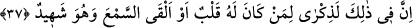

Gece gündüz Süleyman (a.s.)’ın tahtı
Rüzgâr üzerinde gezmez miydi?
Görmedin mi sonunda ne oldu? Tacı tahtı yele verdi.
İyi olan kimse odur ki ilim ve adâletle buradan göçer gider.
Mustafa (s.a.)’in rûhunu isteyen bir görevli Hz. Azrâil (a.s.) sana nasıl şefkat gösterir?
Nûh (a.s.)’ın ömrüne, Kârun’un malına ve Süleyman (a.s.)’ın mülküne sahip olsan bile
ölüm derdine çare olmaz ve sana riâyet etmez. Kisrâ’nın bu âlemden göçmesinin
üzerinden yedi bin sene geçti, insanlar o zamandan beri seferdeler. Sulblerden
rahimlere gelip, rahimlerden yeryüzüne, yeryüzünden yer altına gitmekteler. Bütün âlem
kabristandır, çünkü onun altı tamamıyla hasret ve hayrettir. Başını kaldır ve
gökyüzünden sor ki, kaç padişah hatırlıyorsun? Yeryüzüne bakıp sor ki karnında kaç
nâzenin var?
Ey oğul dünya ebedî kalır bir mülk değildir.
Dünyadan vefâkârlık umulmaz.
Ey tûl-i emeline maskara olmuş ve ey ecelden gâfil olan! Kurtulmanın imkânsız
olduğu bir iş; yâni ölüm için tedbir düşünmezsin, hakîkate giden yolun azığını yanına
almazsın. Dünya işini iyi yaparsın da ölüm tedarikini yapmazsın. Ey miskîn! Ölümün
senin kafandadır; aklında, beyninde, onu sıkça hatırla. Evin kabirdir, asıl onu mamur et.
Dünyanın kırıntısını toplayıp, ihtiyacı olandan men ediyorsun. Dünya malıyla ebedî
olmak için niye tama etmektesin. Anla artık! Ölüm meleği gelir canını yağma eder,
vârislerin gelir malını yağma eder, hasmın şeytan gelir ibadetini yağma eder,
kurtlar/böcekler gelir cildini ve etini yağma eder. Ve âh yazık! Bu gafletle düşmanın
şeytan gelir imanını yağma eder, elinden alır.
Allah Teâlâ’dan bizi uyanık kullarından, din ve yakîn üzere sâbit kalanlardan
eylemesini ve bizi nebîlere, sıddîklara, şehidlere ve sâlihlere yoldaş eylemesini murad
ederiz. Amin.
37. Şüphesiz ki bunda aklı olan veya hazır bulunup kulak veren kimseler için bir
öğüt vardır.
“Şüphesiz ki bunda aklı olan” Onların kıssalarından burada zikredilenlerde veya bu
sûrede zikredilmiş ibretler, haberler ve beldelerin helakinde bir öğüt, nasihat vardır.
İnsanların ibret alıp öğütlenmeleri için.
“Kalbi olan kimseler için.” Yani müşâhede ettiği şeylerin künhünü idrak edebileceği
ve onların üzerinde gerektiği gibi tefekkürde bulunabileceği bir kalb-i selimi olanlar